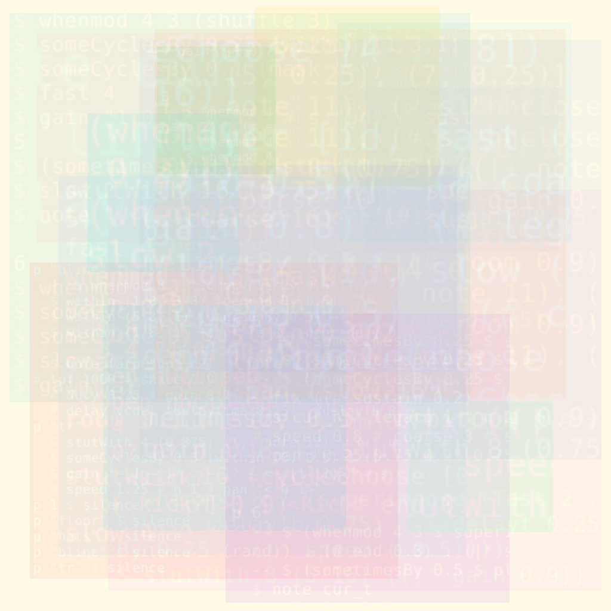

2020
October 28, 2020 | Generator Israel: Emergent Behavior
Generator Israel live stream
October 7, 2020 | NODE20: Second Nature
NODE Forum for Digital Arts
August 18, 2020 | TidalCycles New Moon Marathon
Twitch/YouTube
- Cai on visuals, Derek on TidalCycles
July 18, 2020 | Caider at Network Music Festival
Toplap Berlin Mozilla Hubs VR Algorave
May 31, 2020 | Neuvoids Algovoids
Twitch
- Cai on visuals, Derek on TidalCycles
May 2, 2020 | VR Algorave Set on the Cyber Yacht
Mozilla Hubs Cyber Yacht
- Cai on visuals, Derek on TidalCycles
March 21, 2020 | Who's Afraid of the Singularity
Mars (Bombay Beach, CA)
- Kinect/TouchDesigner visuals with Derek on frame drum accompanying improvised dance by Yin Cheng-Kokott
- Cai/Derek TidalCycles/P5Live + Processing + TouchDesigner algorave
- jam session with Cai on visuals, Derek on KORG WaveDrum, Arseniy on Moog Drummer From Another Mother
March 14, 2020 | Desert Algorave
Mars (Bombay Beach, CA)
- Derek on TidalCycles, Cai on P5Live + Processing + TouchDesigner